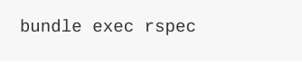
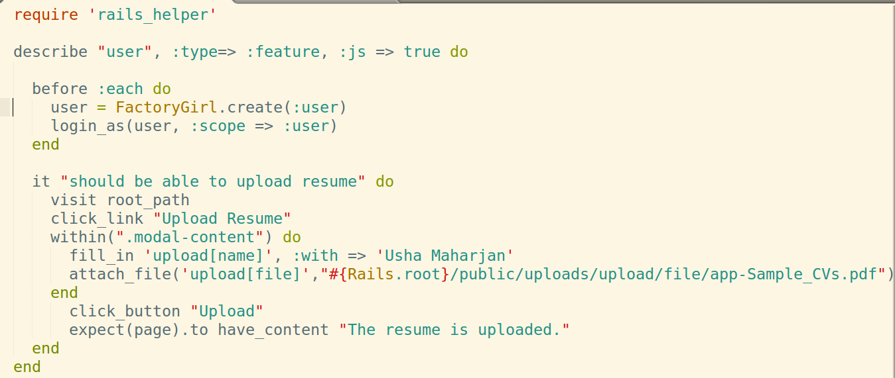
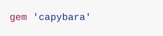

By Neha Suwal
Rspec-rails is a testing framework
Use rspec command to run the spec
By default the above will run all _spec.rb files in the spec directory
Rspec
Feature specs, a kind of acceptance test, are high-level tests that walk through your entire application ensuring that each of the components work together.
An example
The feature test can be done by using capyabara.
Capybara helps you test web applications by simulating how a real user would interact with your app.
Adding Capybara in rails project:
Require capyabara.rails in spec_helper.rb
To run test via capybara gem 'selenium-webdriver' is required.